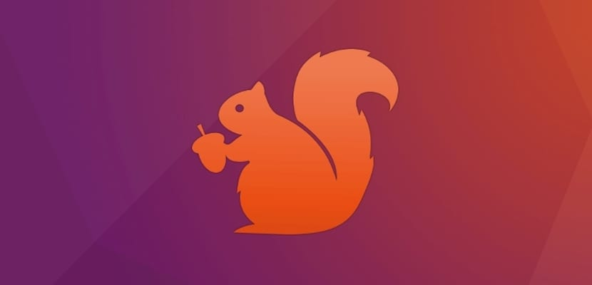

Notícies i consells
Notícies tecnològiques

Nova versió d’Ubuntu disponible
Ubuntu 24.04 LTS arriba amb millores de rendiment, compatibilitat de hardware i seguretat reforçada.
Augment dels atacs a PIMEs
Les petites empreses són ara el blanc principal dels atacs de phishing. Et donem recomanacions per protegir-te.
Nous serveis disponibles
AVS amplia el seu catàleg amb manteniment mensual per a entorns híbrids i serveis de còpies al núvol.
Consells pràctics
- Canvia la contrasenya dels teus serveis cada 3 mesos.
- Fes còpies de seguretat regularment i emmagatzema-les fora del dispositiu principal.
- Neteja el teu equip de pols per evitar sobreescalfaments.
- Utilitza autenticació en dos passos en serveis en línia.
- Escaneja el teu equip amb antivirus un cop a la setmana.